TEMOS QUE CHUTAR!
Draft "escolha 1 de 3" com os 151 de Kanto e uma copa de futsal 5 contra 5, no navegador.
Grátis, sem anúncio, sem conta obrigatóriaQuem somos
Pokémon e futebol, numa copa que dura minutos
Missão
Juntar Pokémon e futebol num jogo curto de celular que dá vontade de jogar de novo.
Pra quem
O fã que cresceu com a Gen 1 e a criança de 12 anos no celular. Os dois leem a mesma tela.
O que diferencia
O golpe aparece em campo: o Snorlax fecha o gol, o Ditto joga em todas. E tudo tem cara de transmissão de TV.
Os Pokémon jogam. O símbolo é nosso.
Sprites, gritos e nomes são da Nintendo, Game Freak, Creatures e The Pokémon Company (créditos em CREDITS.md). Eles aparecem no jogo e nas artes, nunca no logo.

Sprite de jogo
public/assets/cards/: draft, Pokédex, artes.

Fileira de time
Nas artes, uma fileira de 5 a 6, de pé, na mesma escala.
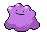
Piada com Pokémon
O Ditto em todas as posições. Humor de fã, com o Pokémon certo.
Pixel art em múltiplo inteiro
- Ampliar só em 2x, 3x com
image-rendering: pixelated. Reduzir comimage-rendering: auto. - Item tem 30 x 30: mostre em 30, 60 ou 90 px. Ícone de tipo é arte lisa: sem
pixelated. - Fundo de marca: azul-noite radial
#2a3a7a → #070a18com os raios da tela de evolução.

60 px (2x)
Cada pixel vira 2 x 2. Nítido.
44 px (1,47x)
Pixel desigual: umas linhas dobram, outras não.
20 px reduzido liso
Menor que o original: filtro liso, sem pixel faltando.
Identidade visual
A carta holo com a bola
O primeiro O de SOCCERMON é uma carta dourada inclinada, com holo em quatro faixas e uma bola de futebol de verdade, com faixa e botão dourado: lê como bola e como pokébola. Vetor limpo: contorno azul-noite firme, cores chapadas, nada de degradê.
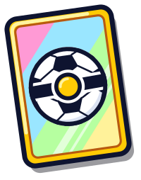
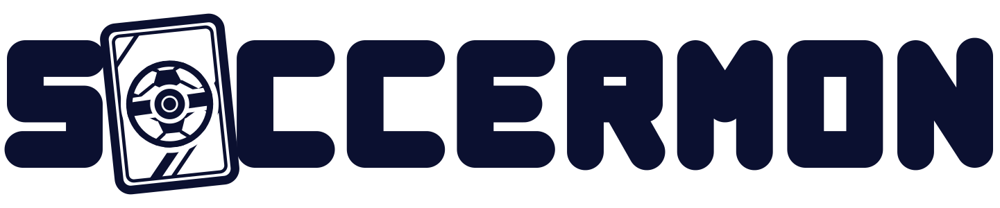
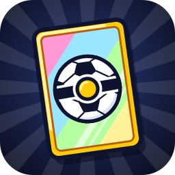
Área de respiro: metade da altura das letras
Tamanho mínimo
mínimo 120
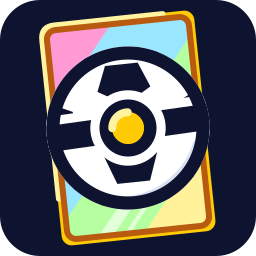
Usos errados
Esticado
Sempre na proporção 1441 x 300.
Cor trocada
SOCC branco, ERMON dourado. Sempre.
Brilho borrado
Sem glow, sem sombra macia, sem degradê.
Girado
Só a carta é inclinada (-8°), o resto fica reto.
Cor em fundo claro
Fundo claro pede a versão de uma cor.
SOCCERMON
Nome em fonte
O título é desenho. Em texto corrido, "Soccermon".
Azul-noite domina; a cor do botão é a função
Tokens (toque no hex pra copiar)
Cartas: o metal vem da nota
Tipos (cor oficial, só pro tipo)
Contraste medido
| Texto | Fundo | Razão | Uso |
|---|
Galmuri, uma família pixel só
SIL OFL 1.1, em public/fonts/ (subset por npm run fonts). Fonte é pixel: nada de alisar.
Em uso
Venceu as três. Falta uma pra levantar a taça.
O kit da transmissão
O site inteiro usa as peças do placar de TV (src/ui/broadcast-kit.css): superfície chapada, borda de baixo preta, faixa lateral na cor do time, sombra dura.
.bc-surface + .bc-stripe
Faixa de 6 px na cor do time.
.bc-screenhead
O título num placar, a etiqueta em cima.
.btn
Chanfrado: contorno, faixa clara em cima, base escura, afunda e quica no toque. Cor por função: dourado joga, verde confirma ou compra, azul é secundário, vermelho é perigo ou fechar, terciário sem face. Base escura = dá pra tocar.
.panel
Raio 10, borda --line, sombra dura.
- Raios: 4 etiqueta, 6 placar, 8 botão, 10 painel e carta.
- Sombra sempre dura. O único brilho é o amarelo de seleção.
Desenhado, nunca emoji
Interface (HudIcon)
Grade 24, só contorno, traço 2.4 (3 abaixo de 14 px), ponta e junta redondas, currentColor, 18 px.
Ilustração de menu
Cheia, colorida, contorno escuro, grade 32. Só em cartão de menu e prêmio.
Sprite
Pixel art pelas regras da Ilustração.
A → B · ×2
Caractere de texto
Só pontuação dentro da frase. Sozinho num botão, nunca.
Os ícones de interface (de src/ui/components/MatchHud.tsx)
× ▲ ★ ↻
Caractere solto
Fechar, setas, estrela e sortear eram letras. Viraram HudIcon.
Mesma família
Um cadeado, uma seta, um visto em todo o site.
Pendente: a carta
A carta ainda usa ● ◆ ★ na raridade e ★ SHINY. Muda só pela galeria ?cards=1 com o ok do Miguel.
Movimento e som
Peso de jogo, sem enjoar
0,6 s · tudo
0,6 s · carta, número, selo
não use
Micro-movimentos (passe o mouse ou o foco)
Cartão sobe
3 px, 0,15 s.
- Anime
transformeopacity. Botão 0,06 s, hover 0,15 s, painel 0,2 a 0,3 s. - Loop só em decoração leve (pacote flutuando, a carta do carregamento).
- Reduzir movimento (Configurações › Acessibilidade):
<html data-reduce-motion="true">zera animação e transição e some com os clarões; na quadra, câmera parada e evolução sem animação. Toda animação nova é testada com ele ligado.
Gravado, não sintetizado
- Um apito só, gravado (CC0). Torcida gravada do lado do jogador: gol, vaia, "uuuh".
- Gritos dos Pokémon em 8-bit (Gen 1) ou modernos, o jogador escolhe. Efeitos curtos do ZzFX.
- Música só nos vídeos: o Miguel escolhe e ela é creditada.
Voz
Curto, direto, de fã pra fã
- Curto e direto. Legenda de vídeo: 2 a 5 palavras, a feature, em caixa alta.
- Sem ironia nem piada empilhada. As irônicas pareceram feitas com IA.
- Sem tricolon de IA.
- Humor de fã em momento pontual, de preferência paródia de coisa real: grito de torcida, fala dos jogos.
- Quem lê tem 12 anos e está no celular: até ~12 palavras por texto no jogo.
- Jargão Pokémon é bem-vindo: PP, super efetivo, Hyper Beam, insígnia. Golpe com o nome oficial em inglês.
- Frase do Miguel vale como está. Só gramática ou tamanho, e avise.
Legendas aprovadas
Antes e depois
| Antes | Depois |
|---|---|
| CHAMA AQUELE AMIGO QUE DIZ QUE É MESTRE POKÉMON | MULTIPLAYER ONLINE |
| ELE EVOLUIU NO MEIO DO JOGO?! | EVOLUÇÕES NO MEIO DO JOGO |
| Monte. Escale. Evolua. | Temos que chutar! |
| Você receberá uma recompensa ao vencer. | Ganhou! Pegue um Pokémon do rival, um item ou uma MT. |
Humor de fã, do jeito certo: as faixas da torcida
Fã, narrador, direto
| Somos | Faça | Não faça |
|---|---|---|
| Fã falando com fã | "É super efetivo!" | explicar o que é PP |
| Narrador de TV | "GOL!", "GOLPE MÁXIMO" | frase de manual ("O usuário deve selecionar") |
| Direto | "Toque em dois pra trocar." | "Para realizar a troca, toque em dois jogadores." |
Usamos
Evitamos
Conferir: python3 -I .claude/skills/soccermon-marca/copy_ia.py <arquivo> (e --legenda pra legenda de vídeo). Depois leia em voz alta.
Aplicações
Onde a marca aparece
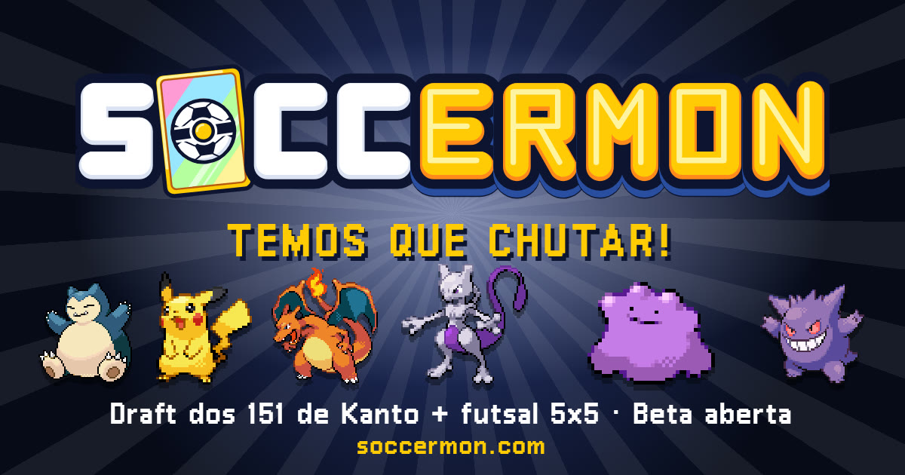
soccermon.com
Prévia do link (public/og-image.jpg, 1200 x 630).
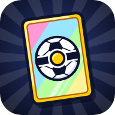
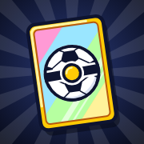
Ícone do app, iPhone, aba em 32 e em 16.
Home
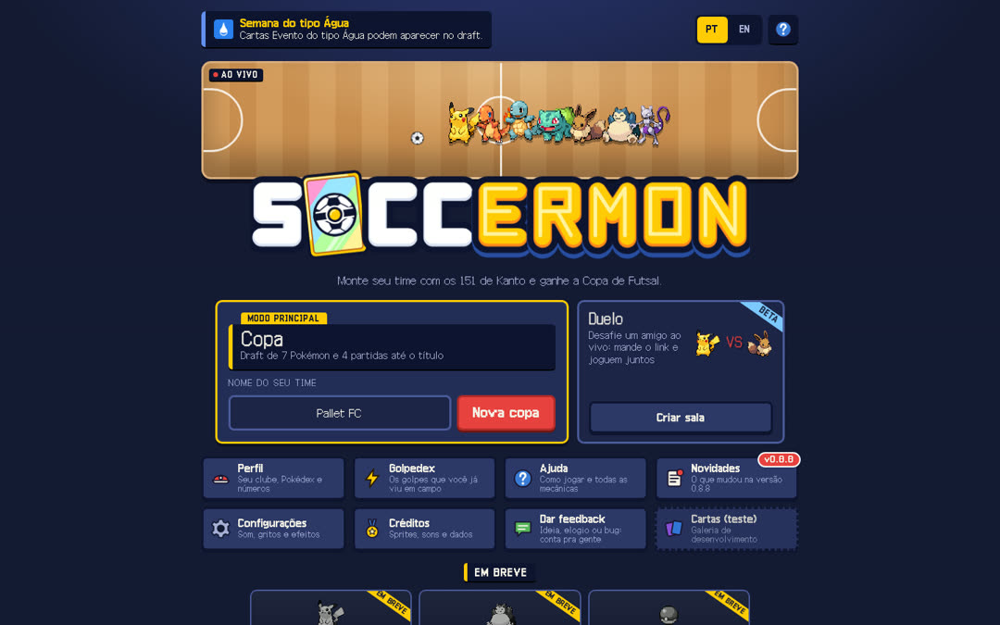
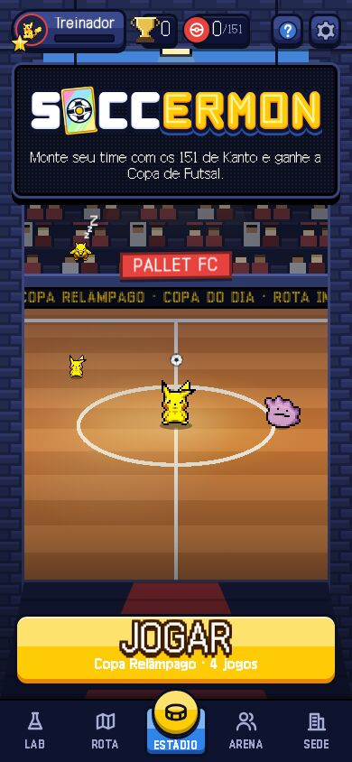
Página 404: "Fora de jogo!"
Placar 4 x 4 com a bola, Psyduck confuso, não culpa a pessoa, botão de volta. public/404.html.
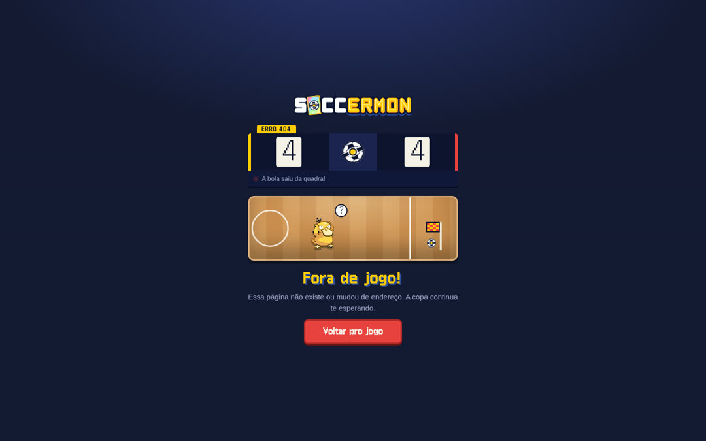
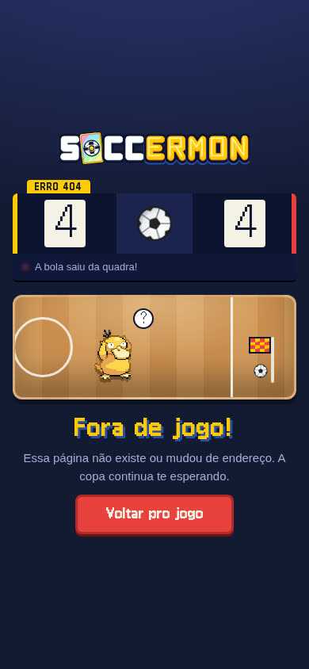
Uma tela de jogo (o kit em uso)
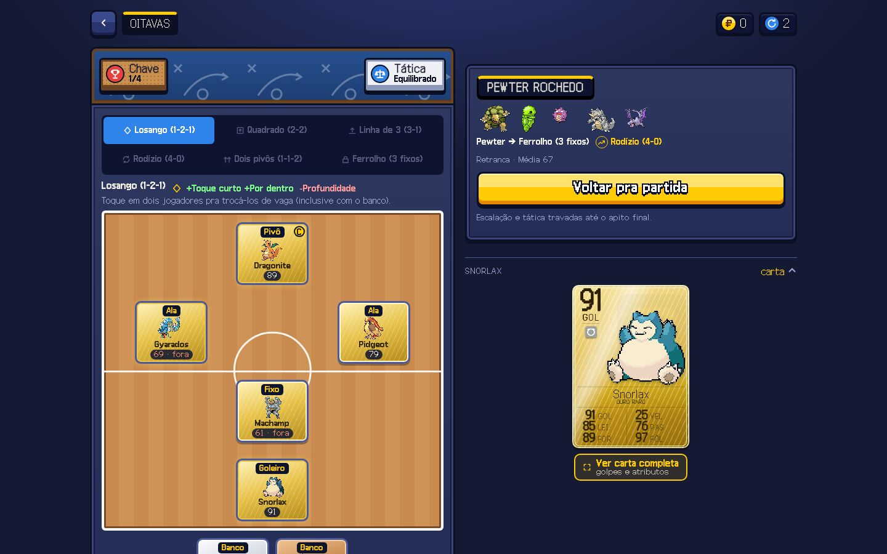
O jogo não manda e-mail
Login pelo Google ou anônimo. Se um dia mandar: remetente "Soccermon", assunto curto que diz o que tem dentro, sem emoji, fundo azul-noite sólido, logo em PNG com contorno, texto nunca em imagem.
Para não errar
Todo mundo joga
Contraste
Pela tabela da Cor. Branco sobre verde, não.
Foco
Anel de 3 px amarelo ou branco, folga de 2 a 3 px.
Toque
Alvo de 40 a 44 px.
Ícone sozinho
Botão com aria-label, SVG com aria-hidden.
Fonte da verdade
O que quebra a marca
- Emoji na interface. Só no texto de Compartilhar e nos posts.
- Caractere solto como ícone num botão ou marcador.
- Logo esticado, recolorido, com degradê ou sem contorno.
- Marca da Nintendo em destaque: logo oficial, fonte Pokémon Solid, Pokébola como símbolo, "Pokémon" maior que "Soccermon".
- Qualquer dinheiro: doação, anúncio, loja.
- Sombra macia ou degradê nas peças do kit.
- Cor de tipo como enfeite, dourado espalhado.
- Texto com cara de IA: tricolon, ironia empilhada, legenda comprida.
- Mudar carta sem a galeria
?cards=1. - Animação que ignora Reduzir movimento.